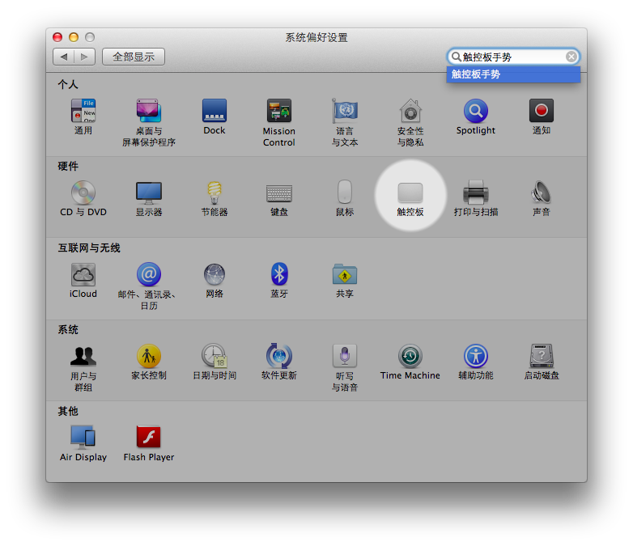
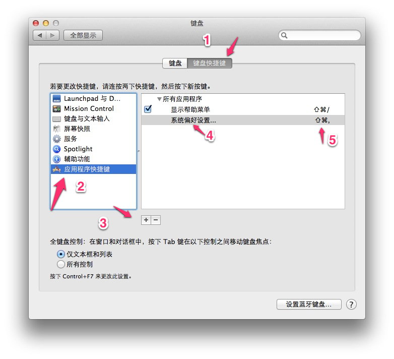
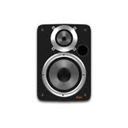

1. 申请一个Apple ID
打开新Mac之前，如果还没有Apple ID的话，去申请一个，因为你终究需要下面这一大堆东西：

2. 买一个“时间胶囊” (Time Capsule)
“时间胶囊” (Time Capsule)是必须的，再贵都是必须，少废话，一定要买，没有它绝对不行。(便宜一点的替代方案是购买一个网络硬盘盒，比如希捷的，不过，配置起来可就麻烦多了，省钱从来都不容易……)

3. 配置触控板 (Touchpad)
触控板（Touchpad）是Mac体验中最好、最重要的一个部分。最先需要适应，也最先需要配置的就是它

点击屏幕左上角的黑色苹果logo，选择“系统偏好设置…”(“System Preferences…”)，选择“触控板”(“Touchpad”)，而后勾选里面的每一个选项。每一个动作都有动画教学，一看就懂……

a) Better Touch Tool
Touchpad已经很好了，但是若安装了Better Touch Tool就会更好(下载链接)。

用这个软件可以配置更多的触控板动作，这里是我的配置文件，导入之后，就可以有以下快捷键：
- 按左下角: 将当前窗口放置到屏幕左下角
- fn+按左下角: 将当前窗口放置到屏幕左上角
- 按右下角：将当前窗口放置到屏幕右下角
- fn+按右下角：将当前窗口放置到屏幕右上角
- 四指按：将当前窗口最小化
- fn+四指按：在当前文件夹中创建新文件
- fn+四指下滑：关闭屏幕
- 四指点：将当前窗口最大化
- fn+点左上角：将当前窗口放置到左半边
- fn+点右上角：将当前窗口放置到右半边
如果有外挂屏幕，还可以：
- fn+三指点：将当前窗口移到下一个屏幕
4. 配置键盘

打开“系统偏好设置”，“硬件” > “键盘”，然后按照上图的顺序设置一遍。以后就可以用快捷键直接呼出“系统偏好设置”： “⇧+⌘+,” 。
5. Spotlight
系统默认的Spotlight快捷键是”⌘+space”，这是最有用的东西。选择Mac的重要原因之一就是这个系统默认的“全文检索”功能非常强大。Dock上的图标可以统统删掉，养成习惯，无论需要打开什么程序，都先”⌘+space”呼出Spotlight，然后输入改程序的名字（通常情况下，只需要输入前几个字母，就可以直接找到改程序）。
重要技巧：在Spotlight中，用 ↑ 和 ↓ 选择不同项目之后，按 ↩ 会打开该程序（或文件），而按 ⌘ + ↩ 则是“在Finder中打开该文件”。
6. 中文输入法
Mac下的中文输入法越来越多，以前只有个人、小团队维护的中文输入法，现在各大公司都推出了中文输入法，搜狗、腾讯、百度都有Mac上的中文输入法。
Mac上自带的输入法，全拼输入已经很好。如果希望提高输入速度，不妨试用一下鼠须管。（另，第三方的输入法，百度的中文输入法还算不错。但，对于我这种担心百度人品的人来说，只好弃用之。）
7. 常用软件（免费）
收费软件有一些确实是必买的，比如Microsoft Office 2011 for Mac——不得不说，Apple的KeyNotes确实不错，可Pages和Numbers确实远不如Word和Excel……再比如，可以把iPad当做扩展显示器的Air Display，确实值得购买。购买正版软件，只不过是一种习惯。使用盗版软件，没什么危险，但心里不舒坦。
a) Adium
http://adium.im 可以同时登录若干个Gtalk或MSN，理论上可以支持QQ，可惜，QQ并不支持它……
b) AppCleaner
http://www.freemacsoft.net/appcleaner/ 运行一次之后，以后在删除 /Applications/ 目录中的文件的时候，它会提醒你与之相关的文件都有哪些？
c) Butler
这个软件还真得花一小点时间学习。
d) Dropbox
https://www.dropbox.com/downloading
e) Evernote
http://evernote.com/download/get.php?file=EvernoteMac 这个越来越臃肿的软件依然值得使用，因为它是个 “无所不在(ubiquitous)” 的软件，在你所有的设备上都可以使用它。
f) Firefox

g) Google Chrome
h) Keka
http://www.kekaosx.com 解压缩软件，RAR、ZIP之类的用它就好。
i) MPlayerX
j) QQ
k) QQ浏览器
l) Skitch
http://skitch.com 这个截图软件实在是太方便。
m) TextMate2
https://github.com/textmate/textmate/downloads 这个Mac上被称为 “神一样的文本编辑器” 在各种压力下已经开源并免费了。
n) Thunder
http://mac.xunlei.com 迅雷在Mac上还是不太给力，但也依然很好用。
o) VirtualBox
https://www.virtualbox.org/wiki/Downloads 其实这个免费的虚拟机软件，比收费的Parallel Desktop靠谱多了……
p) Vox

http://voxapp.didgeroo.com 比iTunes不知道轻多少的音乐播放器。人见人爱。
q) YoudaoDict

8. 寻找最快的升级服务器
如果你觉得iTunes，App Store升级的时候，速度特别慢，那就详细读读这篇帖子：App Store下载提速脚本。
9. 定制系统词典
使用Mac词典转换工具: DictUnifier，可以将StarDict的词典文件转换为Mac OS X上的系统默认词典的格式。转换后的文件，存放到 /Library/Dictionaries 目录中，而后，打开Dictionary程序，就可以在“偏好设置里”点选这几个词典。
在Google中搜索一下，就会找到指南，连iPad和iPhone上的词典也可以如此定制。
10. 修改系统高级设置
在这里可以找到很多秘密：http://secrets.blacktree.com，在这个页面顶端，有一个PrefPance 1.0.6 (10.5+)的链接，点击下载、解压之后双击，“系统偏好设置”中就会多出一个Secrets按钮，在那里面可以修改很多高级配置。
11. 关闭Dashboard
在Terminal里输入以下命令而后回车：
1
| |